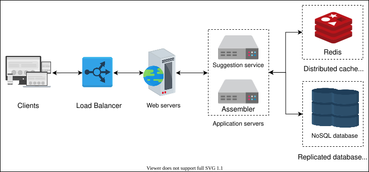

37. Design Typeahead Suggestion
System Design: The Typeahead Suggestion System
System Design: The Typeahead Suggestion System
Learn about the typeahead suggestion system and understand the important details related to its design process.
We'll cover the following
Introduction#
Typeahead suggestion, also referred to as the autocomplete feature, enables users to search for a known and frequently searched query. This feature comes into play when a user types a query in the search box. The typeahead system provides a list of suggestions to complete a query based on the user’s search history, the current context of the search, and trending content across different users and regions. Frequently searched queries always appear at the top of the suggestion list. The typeahead system doesn’t make the search faster. However, it helps the user form a sentence more quickly. It’s an essential part of all search engines that enhances the user experience.
How will we design a typeahead suggestion system?#
We’ve divided the chapter on the design of the typeahead suggestion system into six lessons:
- Requirements: In this lesson, we focus on the functional and non-functional requirements for designing a typeahead suggestion system. We also discuss resource estimations for the smooth operation of the system.
- High-level design: In this lesson, we discuss the high-level design of our version of the typeahead suggestion system. We also discuss some essential APIs used in the design.
- Data Structure for Storing Prefixes: In this lesson, we cover an efficient tree data structure called trie that’s used to store search prefixes. We also discuss how it can be further optimized to reduce the tree traversal time.
- Detailed design: In this lesson, we explain the two main components, the suggestions service and the assembler, which make up the detailed design of the typeahead suggestion system.
- Evaluation: This lesson evaluates the proposed design of the typeahead suggestion system based on the non-functional requirements of the system. It also presents some client-side optimization and personalization that could significantly affect the system’s design.
- Quiz: In this lesson, we assess our understanding of the design via a quiz.
Let’s start by identifying the requirements for designing a typeahead suggestion system.
Requirements of the Typeahead Suggestion System’s Design
Requirements of the Typeahead Suggestion System’s Design
Learn about the requirements and resource estimations for the design of the typeahead suggestion system.
Requirements#
In this lesson, we look into the requirements and estimated resources that are necessary for the design of the typeahead suggestion system. Our proposed design should meet the following requirements.
Functional requirements#
The system should suggest top N (let’s say top ten) frequent and relevant terms to the user based on the text a user types in the search box.
Non-functional requirements#
-
Low latency: The system should show all the suggested queries in real time after a user types. The latency shouldn’t exceed 200 ms. A study suggests that the average time between two keystrokes is 160 milliseconds. So, our time-budget of suggestions should be greater than 160 ms to give a real-time response. This is because if a user is typing fast, they already know what to search and might not need suggestions. At the same time, our system response should be greater than 160 ms. However, it should not be too high because in that case, a suggestion might be stale and less useful.
-
Fault tolerance: The system should be reliable enough to provide suggestions despite the failure of one or more of its components.
-
Scalability: The system should support the ever-increasing number of users over time.
Resource estimation#
As was stated earlier, the typeahead feature is used to enhance the user experience while typing a query. We need to design a system that works on a scale that’s similar to Google Search. Google receives more than 3.5 billion searches every day. Designing such an enormous system is a challenging task that requires different resources. Let’s estimate the storage and bandwidth requirements for the proposed system.
Storage estimation#
Assuming that out of the 3.5 billion queries per day, two billion queries are unique and need to be stored. Let’s also assume that each query consists of 15 characters on average, and each character takes 2 Bytes of storage. According to this formulation, we would require the following:
2 billion ×15×2=60GB to store all the queries made in a day.
Storage required per year:
60GB/day×365=21.9TB/year
Bandwidth estimation#
3.5 billion queries will reach our system every day. Assume that each query a user types is 15 characters long on average.
Keeping this in mind, the total number of reading requests of characters per day would be as follows:
15×3.5 billion=52.5 billion characters per day.
Total read requests per second: 52.5B/86400≈0.607M characters/sec. 86,400 is the number of seconds per day.
Since each character takes 2 Bytes, the bandwidth our system would need is as follows:
0.607M×2×8=9.7Mb/sec
9.7Mb/sec is the incoming bandwidth requirement for queries that have a maximum length of 15 characters. Our system would suggest the top ten queries that are roughly of the same length as the query length after each character a user types. Therefore, the outgoing bandwidth requirement would become the following: 15×10×9.7Mb/sec=1.46Gb/sec.
Number of servers estimation#
Our system will receive 607,000 requests per second concurrently. Therefore, we need to have many servers installed to avoid burdening a single server. Let’s assume that a single server can handle 8,000 queries per second. So, we require around 76 servers to handle 607,000 queries.
607K/8000≈76 servers
Here, we only refer to the number of application servers. For simplicity, we ignored the number of cache and database servers. The actual number is higher than 76 because we would also need redundant servers to achieve availability.
In the table below, adjust the values to see how the resource estimations change.
Resource Estimation for the Typeahead Suggestion System
| Total Queries per Day | 3.5 | billion |
| Unique Queries per Day | 2 | billion |
| Minimum Characters in a Query | 15 | Characters |
| Server's QPS | 8000 | Queries per second |
| Storage | f60 | GB/day |
| Incoming Bandwidth | f9.7 | Mb/sec |
| Outgoing Bandwidth | f1.455 | Gb/sec |
| Number of Servers | f76 | Severs |
Building blocks we will use#
The design of the typeahead suggestion system consists of the following building blocks that have been discussed in the initial chapters of the course:
- Databases are required to keep the data related to the queries’ prefixes.
- Load balancers are required to disseminate incoming queries among a number of active servers.
- Caches are used to keep the top N suggestions for fast retrieval.
In the next lesson, we’ll focus on the high-level design and APIs of the typeahead suggestion system.
High-level Design of the Typeahead Suggestion System
High-level Design of the Typeahead Suggestion System
Get an overview of the high-level design of the typeahead suggestion system.
We'll cover the following
High-level design#
According to our requirements, the system shouldn’t just suggest queries in real time with minimum latency but should also store the new search queries in the database. This way, the user gets suggestions based on popular and recent searches.
Our proposed system should do the following:
- Provide suggestions based on the search history of the user.
- Store all the new and trending queries in the database to include them in the list of suggestions.
When a user starts typing a query, every typed character hits one of the application servers. Let’s assume that we have a suggestions service that obtains the top ten suggestions from the cache, Redis, and returns them as a response to the client. In addition to this, suppose we have another service known as an assembler. An assembler collects the user searches, applies some analytics to rank the searches, and stores them in a NoSQL database that’s distributed across several nodes.

Furthermore, we also need load balancers to distribute the incoming requests evenly. We also add application servers as entry points for clients so that they can forward requests to the appropriate microservices. These web servers encapsulate the internal system architecture and provide other services, such as authentication, monitoring, request shaping, management, and more.
API design#
Since the system provides suggestions to the user and adds trending queries to the databases, we need the following APIs.
Get suggestion#
getSuggestions(prefix)
This API call retrieves suggestions from the servers. This call is made via the suggestion service and returns the response to the client.
The following table explains the parameter that’s passed to the API call:
Parameter | Description |
| This refers to whatever the user has typed in the search bar. |
Add trending queries to the database#
addToDatabase(query)
This API call adds a trending query to the database via an assembler if the query has already been searched and has crossed a certain threshold.
Parameter | Description |
| This represents a frequently searched query that crosses the predefined limit. |
Point to Ponder
Question
Instead of updating the whole page, we just need to update the suggested query in the search box in real time. What technique can we use for this purpose?
In the next lesson, we’ll learn about an efficient data structure that’s used to store the suggestions or prefixes.
Data Structure for Storing Prefixes
Data Structure for Storing Prefixes
Learn about the efficient data structure that’s used to store the search suggestions.
The trie data structure#
Before we move on to the discussion of the detailed design of the typeahead suggestion system, we must choose an efficient data structure to store the prefixes. Prefixes are the groups of characters a user types.
The issue we’re attempting to tackle is that we have many strings that we need to store in a way that allows users to search for them using any prefix. Our service suggests the next words that match the provided prefix.
Let’s suppose our database contains the phrases UNITED, UNIQUE, UNIVERSAL, and UNIVERSITY. Our system should suggest “UNIVERSAL” and “UNIVERSITY” when the user types “UNIV.”
There should be a method that can efficiently store our data and help us conduct fast searches because we have to handle a lot of requests with minimal latency. We can’t rely on a database for this because providing suggestions from the database takes longer as compared to reading suggestions from the RAM. Therefore, we need to store our index in memory in an efficient data structure. However, for durability and availability, this data is stored in the database.
The trie (pronounced “try”) is one of the data structures that’s best suited to our needs. A trie is a tree-like data structure for storing phrases, with each tree node storing a character in the phrase in order. If we needed to store UNITED, UNIQUE, UNIVERSAL, and UNIVERSITY in the trie, it would look like this:
If the user types “UNIV,” our service can traverse the trie to go to the node V to find all the terms that start with this prefix—for example, UNIVERSAL, UNIVERSITY, and so on.
The trie can combine nodes as one where only a single branch exists, which reduces the depth of the tree. This also reduces the traversal time, which in turn increases the efficiency. As an example, a space- and time-efficient model of the above trie is the following:
Track the top searches#
Since our system keeps track of the top searches and returns the top suggestion, we store the number of times each term is searched in the trie node. Let’s say that a user searches for UNITED 15 times, UNIQUE 20 times, UNIVERSAL 21 times, and UNIVERSITY 25 times. In order to provide the top suggestions to the user, these counts are stored in each node where these terms terminate. The resultant trie looks like this:
If a user types “UNI,” the system starts traversing the tree under the root node for UNI. After comparing all the terms originating from the root node, the system provides suggestions of all the possible words. Since the frequency of the word UNIVERSITY is high, it appears at the top. Similarly, the frequency of the word UNITED is relatively low, so it appears last. If the user picks UNIQUE from the list of suggestions, the number against UNIQUE increases to 21.
Point to Ponder
Question
We reduced the time to traverse the trie by combining nodes with single branches and reducing the number of levels. Is there any other way to minimize the trie traversal time?
Trie partitioning#
We aim to design a system like Google that we can use to handle billions of queries every second. One server isn’t sufficient to handle such an enormous amount of requests. In addition to this, storing all the prefixes in a single trie isn’t a viable option for the system’s availability, scalability, and durability. A good solution is to split the trie into multiple tries for a better user experience.
Let’s assume that the trie is split into two parts, and each part has a replica for durability purposes. All the prefixes starting from “A” to “M” are stored on Server/01, and the replica is stored on Server/02. Similarly, all the prefixes starting from “N” to “Z” are stored on Server/03, and the replica is stored on Server/04. It should be noted that this simple technique doesn’t always balance the load equally because some prefixes have many more words while others have fewer. We use this simple technique to understand partitioning.
We can split the trie into as many parts as we wish to distribute the load on to different servers and achieve the desired performance.
Prefixes | Primary | Secondary |
A to M | Server/01 | Server/02 |
N to Z | Server/03 | Server/04 |
Point to Ponder
Question
Where will the mapping between the prefixes and their primary and secondary storage be stored? Who will manage and direct the requests to these servers?
Process a query after partitioning#
When a user types a query, it hits the load balancer and is forwarded to one of the application servers. The application server searches the appropriate trie depending on the prefix typed by the user. For example, if a user types something starting from “U,” it either accesses Server/03 or Server/04 since both have the tries stored on them that have prefixes starting with “U.”
Update the trie#
Billions of searches every day give us hundreds of thousands of queries per second. Therefore, the process of updating a trie for every query is highly resource intensive and time-consuming and could hamper our read requests. This issue can be resolved by updating the trie offline after a specific interval. To update the trie offline, we log the queries and their frequency in a hash table and aggregate the data at regular intervals. After a specific amount of time, the trie is updated with the aggregated information. After the update of the trie, all the previous entries are deleted from the hash table.
Prefix | Time Interval (One Hour) | Frequency |
UNIVERSITY | 1st hour | 25 |
UNIVERSITY | 2nd hour | 60 |
UNIVERSITY | 3rd hour | 100 |
We can put up a MapReduce (MR) job to process all of the logging data regularly, let’s say every 15 minutes. These MR services calculate the frequency of all the searched phrases in the previous 15 minutes and dump the results into a hash table in a database like Cassandra. After that, we may further update the trie with the new data. We can update the current copy of the trie with all of the new words and their frequencies. We should perform this offline because our priority is to provide suggestions to users instead of keeping them waiting.
Primarily, we can update the trie using the following two approaches.
- We can replicate the trie on each server to update it offline. After that, we can start using it for suggestions and throw away the old ones.
- Another way is to have one primary copy and several secondary copies of the trie. While the main copy is used to answer the queries, we may update the secondary copy. We may also make the secondary our main copy once the upgrade is complete. We can then upgrade our previous primary, which will then be able to serve the traffic as well.
Point to Ponder
Question
If the prefix frequencies keep increasing over time, the corresponding integers storing them can overflow. How can we manage this issue?
In the next lesson, we’ll discuss the detailed design of the typeahead suggestion system.
Detailed Design of the Typeahead Suggestion System
Detailed Design of the Typeahead Suggestion System
Learn about the detailed design of the typeahead suggestion system.
We'll cover the following
Detailed design#
Let’s go over the flow and interaction of the components shown in the illustration below. Our design is divided into two main parts:
- A suggestion service
- An assembler
Suggestion service#
At the same time that a user types a query in the search box, the getSuggestions(prefix) API calls hit the suggestions services. The top ten popular queries are returned from the distributed cache, Redis.
Assembler#
In the previous lesson, we discussed how tries are built, partitioned, and stored in the database. However, the creation and updation of a trie shouldn’t come in the critical path of a user’s query. We shouldn’t update the trie in real time for the following reasons:
- There could be millions of users entering queries every second. During such phases with large amounts of incoming traffic, updating the trie in real time on every query can slow down our suggestion service.
- We have to provide top suggestions that might not frequently change after the creation or updation of the trie. So, it’s less important to update the trie frequently.
In light of the reasons given above, we have a separate service called an assembler that’s responsible for creating and updating tries after a certain configurable amount of time. The assembler consists of the following different services:
-
Collection service: Whenever a user types, this service collects the log that consists of phrases, time, and other metadata and dumps it in a database that’s processed later. Since the size of this data is huge, the Hadoop Distributed File System (HDFS) is considered a suitable storage system for storing this raw data.
An example of the raw data from the collection service is shown in the following table. We record the time so that the system knows when to update the frequency of a certain phrase.
Phrases | Date and Time (DD-MM-YYYY HH:MM:SS) |
UNIVERSAL | 23-03-2022 10:16:18 |
UNIVERSITY | 23-03-2022 10:20:11 |
UNIQUE | 23-03-2022 10:21:10 |
UNIQUE | 23-03-2022 10:22:24 |
UNIVERSITY | 23-03-2022 10:25:09 |
-
Aggregator: The raw data collected by the collection service is usually not in a consolidated shape. We need to consolidate the raw data to process it further and to create or update the tries. An aggregator retrieves the data from the HDFS and distributes it to different workers. Generally, the MapReducer is responsible for aggregating the frequency of the prefixes over a given interval of time, and the frequency is updated periodically in the associated Cassandra database. Cassandra is suitable for this purpose because it can store large amounts of data in a tabular format.
The following table shows the processed and consolidated data within a particular period. This table is updated regularly by the aggregator and is stored in a hash table in a database like Cassandra. For simplicity, we assume that our data is case insensitive.
Phrases | Frequency | Time Interval |
UNIVERSAL | 1400 | 1st 15 minutes |
UNIVERSITY | 1340 | 1st 15 minutes |
UNIQUE | 1200 | 1st 15 minutes |
-
Trie builder: This service is responsible for creating or updating tries. It stores these new and updated tries on their respective shards in the trie database via ZooKeeper. Tries are stored in persistent storage in a file so that we can rebuild our trie easily if necessary. NoSQL document databases such as MongoDB are suitable for storing these tries. This storage of a trie is needed when a machine restarts.
The trie is updated from the aggregated data in the Cassandra database. The existing snapshot of a trie is updated with all the new terms and their corresponding frequencies. Otherwise, a new trie is created using the data in the Cassandra database.
Once a trie is created or updated, the system makes it available for the suggestion service.
Point to Ponder
Question
Should we collect data and build a trie per user, or should it be shared among all users?
Evaluation of the Typeahead Suggestion System’s Design
Evaluation of the Typeahead Suggestion System’s Design
Evaluate the design of the typeahead suggestion system based on the non-functional requirements of the system.
We'll cover the following
Fulfill requirements#
The non-functional requirements of the proposed typeahead suggestion system are low latency, fault tolerance, and scalability.
-
Low latency: There are various levels at which we can minimize the system’s latency. We can minimize the latency with the following options:
- Reduce the depth of the tree, which reduces the overall traversal time.
- Update the trie offline, which means that the time taken by the update operation isn’t on the clients’ critical path.
- Use geographically distributed application and database servers. This way, the service is provided near the user, which also reduces any communication delays and aids in reducing latency.
- Use Redis and Cassandra cache clusters on top of NoSQL database clusters.
- Appropriately partition tries, which leads to a proper distribution of the load and results in better performance.
-
Fault tolerance: Since the replication and partitioning of the trees are provided, the system operates with high resilience. If one server fails, others are on standby to deliver the services.
-
Scalability: Since our proposed system is flexible, more servers can be added or removed as the load increases. For example, if the number of queries increases, the number of partitions or shards of the trees is increased accordingly.
Non-functional Requirements | Approaches |
Low latency |
|
Fault tolerance |
|
Scalability |
|
Client-side optimisation#
To improve the user’s experience, we can implement the following client-side optimizations:
- The client should only attempt to contact the server if the user hasn’t pressed any keys for some time—for example, any delay greater than 160 ms, which is the average delay between two keystrokes. This way, we can also avoid unnecessary bandwidth consumption. This suggestion might not be useful when a user is typing rapidly.
- The client can initially wait till the user types a few characters.
- Clients can save a local copy of the recent history of suggestions. The rate of reuse of recent history in the suggestions list is relatively high.
- One of the most crucial elements is establishing a connection with the server as soon as possible. The client can establish a connection with the server as soon as the user visits the search page. As a result, the client doesn’t waste time establishing the connection when the user inputs the first character. Usually, the connection is established with the server via a WebSocket protocol.
- For efficiency, the server can push a portion of its cache to CDNs and other edge caches at Internet exchange points (IXPs) or even inside a client’s Internet service provider (ISP).
Personalization#
Users receive typeahead suggestions based on their previous searches, location, language, and other factors. We can save each user’s personal history on the server separately and cache it on the client. Before transmitting the final set to the user, the server might include these customized phrases. Personalized searches should always take precedence over other types of searches.
Summary#
In this design problem, we learned how pushing resource-intensive processing to the offline infrastructure and using appropriate data structures enables us to serve our customers with low latency. Many optimizations lend themselves to specific use cases. We saw multiple optimizations on our trie data structures for condensed data storage and quick serving.
Quiz on the Typeahead Suggestion System’s Design
Quiz on the Typeahead Suggestion System’s Design
Test your knowledge of concepts related to the design of the typeahead suggestion system.
Which component is responsible for updating the trie offline in the design of the typeahead suggestion system?
A)
The assembler
B)
The suggestion service
C)
ZooKeeper
D)
None of the above